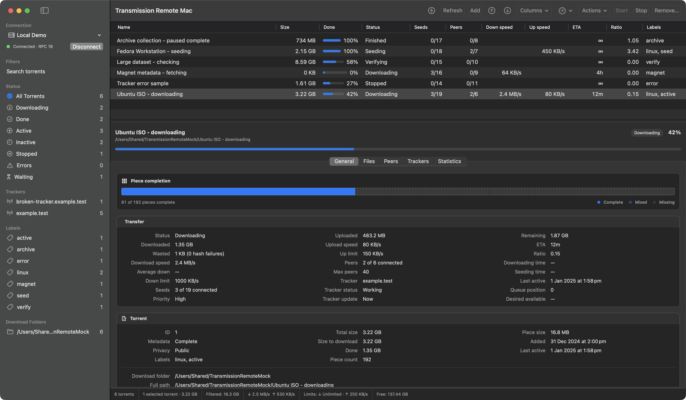

Start, stop and organise
Queue, verify, reannounce, label, move, rename and remove torrents.
Transmission Remote Mac is a native Apple Silicon client for managing Transmission daemons. It keeps the dense, practical workflow of Transmission Remote GUI without making you live in a browser tab.
For Apple Silicon Macs running macOS 14 or later.
The app
Sort or filter a busy queue, select a torrent, and inspect its files, peers, trackers or properties beside the list.

What works
Queue, verify, reannounce, label, move, rename and remove torrents.
Inspect files, peers, trackers and properties beside the torrent list.
Save connection profiles with passwords protected by macOS Keychain.
Open torrent files, paste magnet links, use URLs or provide daemon-visible paths.
Map daemon paths to mounted local folders, then reveal or open downloaded files in Finder.
The app checks the connected daemon and only sends settings and RPC fields it supports.
Why it exists
Transmission Remote GUI proved how useful a compact remote client could be. This project keeps its familiar workflows and rebuilds them with SwiftUI, AppKit and native macOS services.
This is an independent GPL-2.0 project, not an official Transmission client. The source is public and bug reports are welcome.
Current release
Version 0.1.0 is self-signed and not notarized by Apple, so macOS may block it the first time you open it. The GitHub release includes checksums, a manifest and matching GPL source. Follow the installation steps to verify the download and approve the app in Privacy & Security.